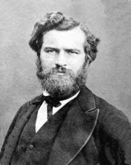
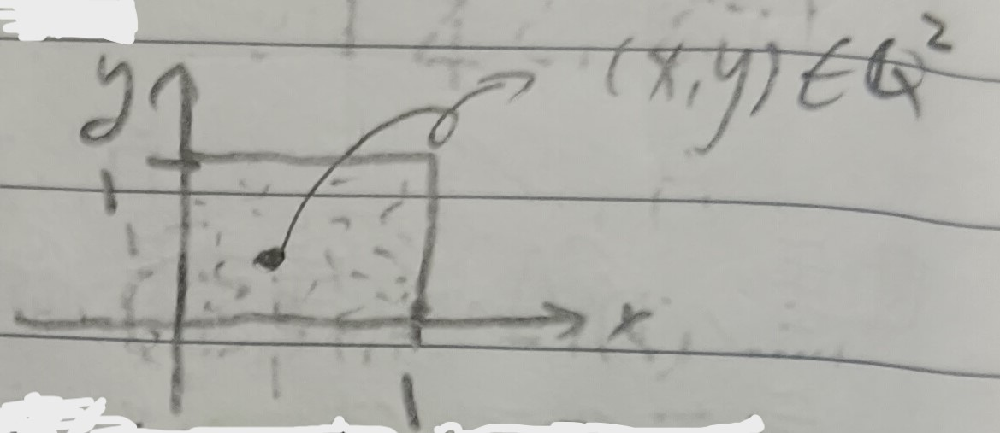
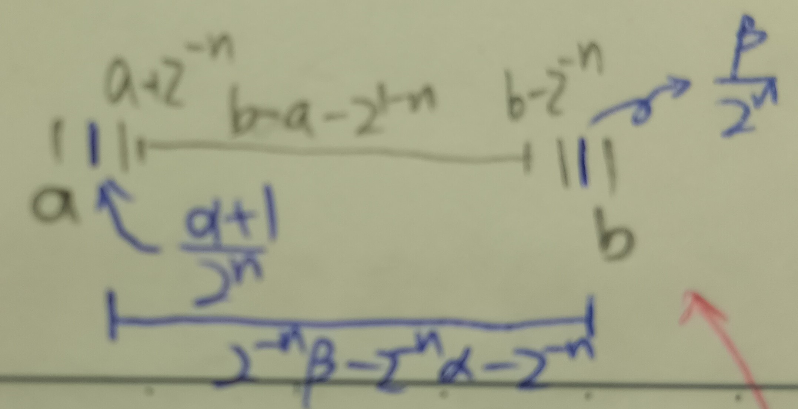

這份筆記是關於集合面積的嚴格定義與性質。
集合的面積
給定有界集合\(S\subseteq\mathbb{R}^2\)，我們想知道\(S\)的面積\(A(S)\)是不是有意義的，又該如何定義。
首先，我們直觀來說希望\(A(S)\geq
0\)，並且希望長與寬分別為\(h\)和\(k\)的矩形的面積是\(hk\)。且若\(S_1,S_2,\cdots,S_N\)彼此的交集為空，則
\[
A(S_1\cup S_2\cup\cdots\cup S_N)=\sum_{i=1}^N A(S_i)
\] 考慮有界集\(S\)，我們用很多單位正方形覆蓋\(S\)(見下圖1中的紅色正方形)。
定義 \[ \begin{aligned} A_0^+(S)&=1\times(\mbox{和}S\mbox{有共用點的紅方格數})\\ A_0^-(S)&=1\times(\mbox{完全落在}S\mbox{中的紅方格數}) \end{aligned} \] 然後把每個方格切成四份(上圖1中的藍方格)，則可以定義 \[ \begin{aligned} A_1^+(S)&=\frac{1}{4}\times(\mbox{和}S\mbox{有共用點的藍方格數})\\ A_1^-(S)&=\frac{1}{4}\times(\mbox{完全落在}S\mbox{中的藍方格數}) \end{aligned} \] 如是可以繼續下去定義\(A_n^+(S)\)和\(A_n^-(S)\)。於是，就有兩數列\(\{A_n^+\}\)和\(\{A_n^-\}\)。顯然，\(\{A_n^+\}\)單調遞減，且\(A_n^+\geq 0\), \(\forall n\)。於是我們知道\(\{A_n^+\}\)收斂，記 \[ \lim_{n\to\infty}A_n^+(S)=A^+(S) \] 同理，\(\{A_n^-\}\)單調遞增，且\(A_n^-\leq A_0^+\), \(\forall n\)，故\(\{A_n^-\}\)收斂，也記 \[ \lim_{n\to\infty}A_n^-(S)=A^-(S) \] 於是，可以定義：
定義 1：集合的面積 (Area of a Set)
給定有界集\(S\)，若\(A^+(S)=A^-(S)\)，則記\(A(S)=A^+(S)=A^-(S)\)為\(S\)的面積。
定義 1-1：約旦可測 (Jordan Measurable)
若\(S\)的面積可以用定義1的方式定義，則稱\(S\)是約旦可測的。
定義 2
定義 2-1：內面積 (Inner Area)
稱\(A^-(S)\)為\(S\)的內面積。
定義 2-2：外面積 (Outer Area)
稱\(A^+(S)\)為\(S\)的內面積。
註記 3
考慮\(A_n^+(S)-A_n^-(S)\)，這是和\(S\)有共用點但不完全落在\(S\)內的格子面積。令\(\partial S\)是\(S\)的邊界，則 \[ A_n^+(S)-A_n^-(S)\leq A_n^+(\partial S) \] 易知若\(A^+(\partial S)=0\)，則\(A^+(S)=A^-(S)\)，則\(S\)有面積。我們把這件事情寫成引理：
引理 4
若對於所有\(\epsilon>0\)，存在\(S_1,S_2,\cdots,S_N\) s.t. \(S_1\cup S_2\cup\cdots\cup S_N\)把\(\partial S\)蓋住且 \[
A(S_1)+A(S_2)+\cdots+A(S_N)<\epsilon
\] 則\(S\)有面積。
證明：我們有 \[
A_n^+(\partial S)\leq A_n^+(S_1)+\cdots+A_n^+(S_N)
\] 讓\(n\to\infty\)，則由假設
\[
A^+(\partial S)\leq A(S_1)+\cdots+A(S_N)<\epsilon
\] 而\(\epsilon\)可以任意小，故\(A^+(\partial S)=0\)。由上述註記3知\(S\)有面積。QED
我們也可以檢查約旦的面積定義和黎曼和是相容的。
註記 5
若\(f\)連續，則 \[
\int_a^b f(x)dx=A(S)
\] 其中\(S\)是\([a,b]\)上\(f\)之下的區域。
證明：把\([a,b]\)分成很多段\(\Delta x_1,\Delta x_2,\cdots,\Delta x_n\)。令 \[ m_i=\min_{x\in[x_{i-1},x_i]}f(x), M_i=\max_{x\in[x_{i-1},x_i]}f(x) \] 於是有 \[ \sum_{i=1}^n m_i\Delta x_i\leq A^-(S)\leq A^+(S)\leq\sum_{i=1}^n M_i\Delta x_i \] 由於\(f\)是黎曼可積的，故 \[ \int_a^b f(x)dx=A(S) \] QED
註記 5-1
若\(S\)是長寬分別為\(h,k\)的矩形，則\(A(S)=hk\)。
註記 6
如果\(S\)和\(T\)都有面積，則\(S\cup T\)和\(S\cap T\)都有面積。
證明：易知 \[ \partial(S\cup T)\subseteq\partial S\cup\partial T, \partial(S\cap T)\subseteq\partial S \] 而\(A^+(\partial S)=A^+(\partial T)=0\)，故 \[ \partial(S\cup T)=0, \partial(S\cap T)=0 \] QED
註記 7
若\(S_1,S_2,\cdots, S_N\)彼此不重疊且有面積，則 \[ A(S_1\cup S_2\cup\cdots\cup S_N)=\sum_{i=0}^N A(S_i) \]
證明：一般來說，有 \[
A_n^+\left(\bigcup_{i=1}^N S_i\right)\leq\sum_{i=1}^NA_n^+(S_i)
\] 而因為\(S_1,S_2,\cdots,
S_N\)彼此不重疊，故 \[
A_n^-\left(\bigcup_{i=1}^N S_i\right)\geq\sum_{i=1}^NA_n^-(S_i)
\] 令\(n\to\infty\)，則 \[
\sum_{i=1}^N A^+(S_i)=\sum_{i=1}^N A^-(S_i)=\sum_{i=1}^N
A(S_i)=A\left(\bigcup_{i=1}^N S_i\right)
\] QED
如是，我們希望\(A(S)\)要有的性質都有了。
例 8：沒有面積的集合
考慮 \[ S=\{\mbox{單位方形中的所有有理點}\} \] 則由下圖3可以發現總是有\(A_n^+(S)=1\), \(A_n^-(S)=0\)，故\(A^+(S)\neq A^-(S)\)，\(A\)沒有面積(至少不是約旦可測的)。
例 9
今假設\(S\)是矩形\([a,b]\times[c,d]\)，則\(A(S)=(b-a)(d-c)\)。
證明：考慮 \[ R_{ik}^n=\left\{\frac{i}{2^n}\leq x\leq\frac{i+1}{2^n},\frac{k}{2^n}\leq y\leq\frac{k+1}{2^n}\right\} \] 則 \[ \begin{aligned} A_n^-(S)&=\sum_{\substack{i,k\\ R_{ik}^n\subseteq S}}A(R^n_{ik})\\ A_n^+(S)&=\sum_{\substack{i,k\\ R_{ik}^n\cap S\neq\varnothing}}A(R^n_{ik}) \end{aligned} \] 首先，我們可以找到整數\(\alpha,\beta,\gamma,\delta\)使得 \[ \begin{aligned} \frac{\alpha}{2^n}<a\leq\frac{\alpha+1}{2^n}&,\frac{\beta}{2^n}<b\leq\frac{\beta+1}{2^n}\\ \frac{\gamma}{2^n}<c\leq\frac{\gamma+1}{2^n}&,\frac{\delta}{2^n}<d\leq\frac{\delta+1}{2^n} \end{aligned} \] 然後，我們有 \[ \begin{aligned} A_n^-(S)&=(\beta-\alpha-1)(\delta-\gamma-1)2^{-2n}\\ A_n^+(S)&=(\beta-\alpha+1)(\delta-\gamma+1)2^{-2n} \end{aligned} \] 則 \[ \begin{aligned} A_n^+(S)&=(\beta-\alpha-1)(\delta-\gamma-1)2^{-2n}\\ &=(2^{-n}\beta-2^{-n}\alpha-2^{-n})(2^{-n}\delta-2^{-n}\gamma-2^{-n})\\ &\geq(b-a-2^{1-n})(d-c-2^{1-n}) \end{aligned} \] 最後一步可以參見下圖4。
同理\(A_n^-(S)\leq
(b-a+2^{1-n})(d-c+2^{1-n})\)。令\(n\to\infty\)，就有\(A(S)=(b-a)(d-c)\)。QED
如是，這裡可以定義積分，具體過程這裡就先略過了。
前面引理4提過若\(A^+(\partial S)=0\)，則\(S\)有面積。這件事反過來也對。
引理 10
若\(S\)有面積，則\(\partial S=0\)。
證明：若\(S\)有面積，則由上註記3有 \[
\lim_{n\to\infty}(A_n^+(S)-A_n^-(S))=0
\] 我們希望說明\(A_n^+(\partial S)\to
0\)。令\(\sigma_n\)是和\(S\)有共用點但不完全落在\(S\)的方格們。給定\(p\)是\(S\)的邊界點，則\(p\in\sigma_n\)。我們有：
1. 若\(p\)落在\(\sigma_n\)中某個方格的內部，考慮構成\(A_n^+(\partial
S)\)的方格們，則落在某個\(A_n^+(\partial S)\)的方格內。
2.
若\(p\)落在\(\sigma_n\)中某個方格的邊界上，則\(A_n^+(\partial
S)\)可能包含該方格周圍的\(8\)個方格(見下圖5)。
於是，有\(A_n^+(\partial S)\leq 9\sigma_n\)。但\(\sigma_n=A_n^+(S)-A_n^-(S)\)，故\(9\sigma_n\to 0\)，即\(A_n^+(\partial S)\to 0\)。QED
定理 11
若\(S\)是有界集，則\(S\)有面積若且唯若\(\partial S\)的面積為零。意即，給定\(\epsilon>0\)，存在\(S_1,S_2,\cdot,S_N\) s.t. \[ \partial S\subset S_1\cup S_2\cup\cdots\cup S_N \] 且 \[ A(S_1)+A(S_2)+\cdots+A(S_N)<\epsilon \]
推論 12
若\(f(x)\)在\([a,b]\)上連續，則集合 \[ G_f=\{(x,f(x)),x\in[a,b]\} \] 的面積是零。
定義 12-1：圖 (Graph)
集合 \[
G_f=\{(x,f(x)),x\in[a,b]\}
\] 稱為\(f\)的圖。
證明：我們知道\(f\)在\([a,b]\)上一致連續，即存在\(\delta>0\) s.t. 當\(|x-y|<\delta\)時，\(|f(x)-f(y)|<\epsilon\)。選定夠大的\(n\)使得\(\frac{1}{2^n}<\delta\)，則考慮\(S_n\)為長\(\frac{1}{2^n}\)，寬\(\epsilon\)且蓋住\(G_f\)的小矩形們，則 \[ A_n^+(G_f)=\leq\sum S_n=(b-a)\epsilon \] 我們令\(\epsilon\to 0, n\to\infty\)，則\(A(G_f)=0\)。QED
註記 13
若\(S,T\)都有面積且\(T\subset S\)，則\(A(S-T)=A(S)-A(T)\)。
證明：易知 \[ \partial(S-T)\subseteq\partial S\cup\partial T \] 故\(A(\partial(S-T))=0\)。而\((S-T)\cup T=S\)且\((S-T)\)和\(T\)顯然不重疊。則由註記7，有\(A(S-T)+A(T)=A(S)\)。QED